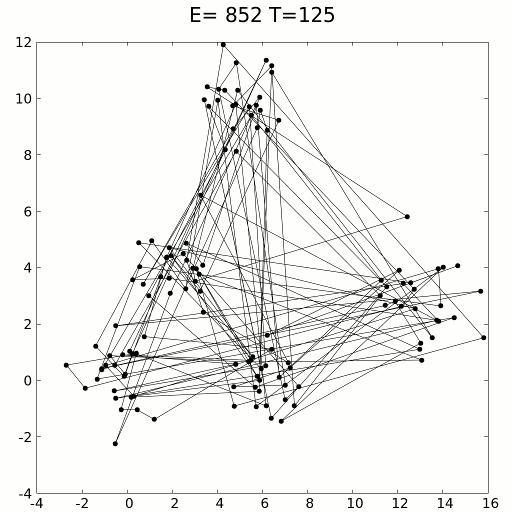

swarm-intelligence
Boids Model
体积排斥:每个模拟的个体都会占据一定的体积，而这些体积永远不会相交，即每个个体都会避免与最近的个体发生碰撞。
速度对齐:每个个体与其近邻保持速度同步。
聚集倾向:粒子不会倾向于独立行动，每个个体会尽量与附近个体靠近，以避免孤立。


simulated-annealing

体积排斥:每个模拟的个体都会占据一定的体积，而这些体积永远不会相交，即每个个体都会避免与最近的个体发生碰撞。
速度对齐:每个个体与其近邻保持速度同步。
聚集倾向:粒子不会倾向于独立行动，每个个体会尽量与附近个体靠近，以避免孤立。